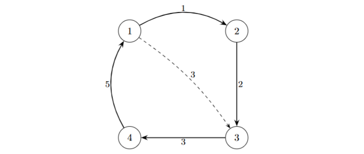

From a Delivery Route to a Mathematical Model
This page turns the route story into graph theory, route notation and the economic definition of an outlier.

The business question is now clear: some parts of the route may be economically harmful, but we still need a language precise enough to measure that claim. This page therefore turns the route into a graph, the graph into a route-length model, and the route-length model into an economic outlier definition.
From route to graph
The route is represented as \(G = (V, A, w)\), where \(V\) is the set of route units, \(A\) is the set of directed arcs and \(w : A \to \mathbb{R}_{\ge 0}\) assigns a travel cost or distance to each arc.
If the optimization graph is complete, then every ordered pair of distinct route units is available as a candidate transition.
In the implementation, the weight matrix is not just a concept. It is the routed distance matrix that the solver actually reads.
Once the route has become a graph, we can start asking how long it is geometrically. That requires us to look more carefully at the directionality of the distances.
Road graph versus optimization graph
The code distinguishes between the road-level geometry used by the routing layer and the reduced graph used by the optimization layer.
For structured routes, the route is split into an outer graph between
route units and an inner graph inside each unit. The relevant objects are the outer matrix
D_outer, the full address matrix D_all and the structured unit models.
Asymmetric distance matrix
A route is not necessarily symmetric. The distance from unit \(i\) to unit \(j\) can differ from the reverse distance, so the matrix is generally asymmetric.
This asymmetry matters because the route length depends on direction. A stop that looks cheap in one position may be expensive in the opposite direction.
Routes, paths and cycles
| Concept | Meaning in this project |
|---|---|
| Path | An ordered visiting sequence through route units. |
| Cycle | A path whose last unit connects back to the first unit. |
| Hamiltonian path | An open route that visits every unit exactly once. |
| Hamiltonian cycle | A closed route that visits every unit exactly once and returns to the start. |
| TSP | Closed optimization route used when the route must return to its starting point. |
| HPP / SHPP | Open optimization route used when no return edge is required. |
The point of these definitions is not to turn the documentation into a graph theory textbook. It is to make the solver choices precise enough to explain the implemented route search.
Problem statement and notation
We distinguish carefully between route units and served mailboxes. That distinction matters because one removed route unit can contain many mailboxes, and the revenue per mailbox need not be identical across units.
| Symbol | Meaning |
|---|---|
| \(R\) | The full route, or the set of route units currently under evaluation. |
| \(S \subseteq R\) | A candidate subset removed from the route. |
| \(R \setminus S\) | The remaining route after removing the candidate subset. |
| \(n(R)\) | The number of route units. |
| \(N(R)\) | The number of mailboxes or economic units served by the route. |
| \(p_i\) | The number of mailboxes attached to route unit \(i\). |
| \(D=[D_{i,j}]\) | The routed distance matrix. At unit level it gives transition distances \(D_{i,j}\); at internal address level it gives distances such as \(D_{a_j,a_{j+1}}\). |
| \(L_u\) | The internal cost of route unit \(u\), such as service time, handling time or internal traversal. |
| \(O(T)\) | The revenue generated by the retained subset \(T\). |
| \(E(T)\) | The average revenue per mailbox on \(T\), defined as \(E(T)=O(T)/N(T)\). |
Important distinction.
n(R) counts route units. N(R) counts mailboxes or other economic units. The
project needs both, because removing one route unit may remove many mailboxes.
Here \(o_i\) denotes the revenue contributed by route unit \(i\). If one prefers a mailbox-level view, this can be written as \(o_i=e_i p_i\), where \(e_i\) is the revenue per mailbox for unit \(i\). This is the more general formulation. A constant scalar \(E\) is only a special homogeneous case.
Fixed route length and optimized route length
The route length should be split into two parts: the internal cost of each route unit, and the travel between consecutive route units.
Let the fixed route order be \(R=(u_1,u_2,\dots,u_k)\). Each route unit \(u\) may carry its own internal cost \(L_u\), which can represent service time, handling time or an internal traversal length depending on the model.
Here \(L_u\) is the internal cost of route unit \(u\), while \(D_{u_t,u_{t+1}}\) is the routed transition distance from the exit of \(u_t\) to the entry of \(u_{t+1}\). If a route unit is modeled as a single stop with no internal traversal, then \(L_u\) may be zero. If the unit represents a site with service time or handling time, that time belongs in \(L_u\).
The optimized length \(L^{*}(R)\) keeps the same internal lengths, but minimizes over all allowed permutations of the route units. Depending on the modeling assumption, that optimization is either open (Shortest Hamiltonian Path / HPP) or closed (TSP).
In the code, the fixed-order calculation is handled by
route_length_type1, while optimized routes are solved by the TSP or HPP backends depending
on the problem type.
We can now describe how expensive the route is geometrically. What we still cannot answer is whether the route is economically desirable.
Contribution margin
The economic score of the route is the contribution margin:
Here \(O(R)\) is the realized revenue on the route and \(APR\) is the distance-related cost. This formulation is important because revenue per mailbox does not have to be constant across route units.
Only in the homogeneous special case, where every mailbox yields the same revenue \(E\), can we simplify the expression to
The implementation therefore matches the more general revenue view better if we state the model through \(O(\cdot)\) first and treat constant \(E\) as shorthand.
Removing a subset
We now have a route with a measurable geometric cost and a measurable economic value. The final step is to ask what happens when part of the route disappears.
Let \(S \subseteq R\) denote the candidate subset removed from the route, and let \(R \setminus S\) be the retained route after that removal.
This is the central operation of the project. Every later algorithm, exact or heuristic, is built around generating such subsets and asking whether removing them improves contribution margin.
Marginal distance effect
Removing a subset changes the route length even before economics enters the picture.
The route-length change is defined by
This separates geometry from economics. Once we know the length change, we can combine it with revenue loss to obtain the full economic effect.
We can now assign a geometric effect to removing a subset. The final theoretical step is to ask how that geometric change interacts with revenue.
Marginal economic effect
The relevant quantity is the marginal economic effect. For a subset \(S\), removing the units changes the contribution margin by
This is the safest formulation, because the revenue loss from removing \(S\) is not generally captured by a single constant \(E\).
In the homogeneous special case where all mailboxes share the same unit revenue \(E\), the expression collapses to the simpler scalar form
Formal economic outlier definition
The implementation does not stop at \(C_2(S) > 0\).
A practical outlier must also clear a threshold \(z\), and the code keeps the proper-superset condition used by the report and the post-processing step.
At this point the central theoretical model is complete: we have a graph, a route-length model, a contribution margin and a formal economic outlier definition. The remaining sections extend that core model in directions that are useful for interpretation and implementation.
Most profitable route as a function of the number of addresses
The outlier definition can also be viewed from the opposite direction. Instead of starting with a removal subset and asking whether it should be excluded, we can ask which retained route is most profitable for a fixed number of addresses.
Note: If revenue per mailbox is constant, then \(O(T)=E\cdot N(T)\).
This defines the best achievable contribution margin for every admissible route size \(n\). The optimal address count and the corresponding optimal retained set are then
In this formulation, the optimal removal set is simply the complement of the most profitable retained route. That makes the profitability curve over route size a useful theoretical bridge between route design and outlier detection.
Relation to outliers
For a fixed \(n\), the removed set \(S\) satisfies \(n(S)=n(R)-n\). Its marginal effect is still measured through the same quantity as before:
The outlier criterion therefore remains relevant in this view as well. It identifies the addresses that, considered in isolation or in small subsets, should be removed because they move the route toward a more profitable retained set.
Structured route units
The project also supports structured routes in which one route unit contains a group of addresses. Those units have internal traversal, an entry point and an exit point. This is why the implementation keeps both an outer unit graph and an inner address-level route model.


This is the point where the route story becomes nested: the outer order of units can be optimized, and the internal visit order inside each unit can also be solved, depending on the chosen problem type.